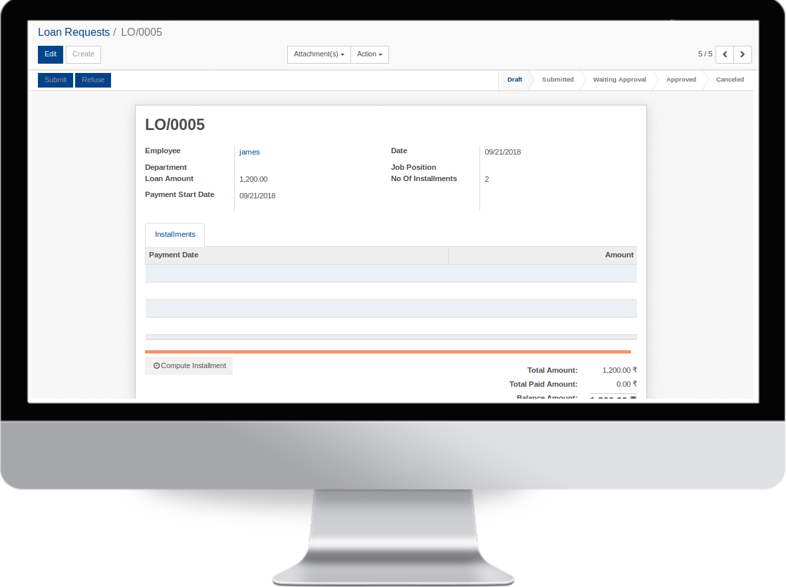
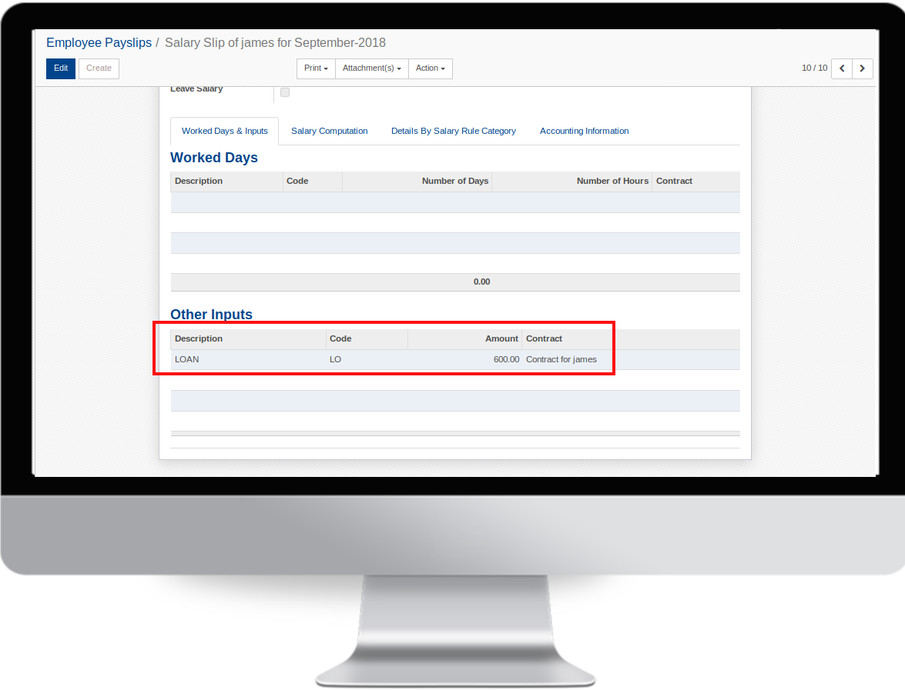

Open HRMS Loan is a component of Open HRMS suit.
Open HRMS Loan module helps the user to configure different loan policies, assign approval authority, conduct the verification process and sanction loan for employees.
Configuration
Install the Module "Open HRMS Loan Accounting" in order to enable Accounting Entries.
Features
Employee can create loan request.
Loan amount is deducted from the salary.
Double layer approval, from Accounting & HR Department.
Current month installment is automatically listed in payslip.
Screenshots
Enable the option "Loan Approval From Accounting Department" In accounting settings
Add the deduction rule for loan in Salary Structure.
Employee can create loan request

Once the HR department has given the Approval, the accounts department take the decision.
When we create the payslip, all the pending installments of the month will be listed there.

When we check the Loan request again,
the deducted installments will be changed to paid.